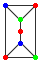
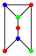
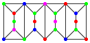

Consider graphs built with the units $A$:

and $B$:
, where the units are glued along the vertical edges as in the graph
.A configuration of type $(a, b, c)$ is a graph thus built of $a$ units $A$ and $b$ units $B$, where the graph's vertices are coloured using up to $c$ colours, so that no two adjacent vertices have the same colour.
The compound graph above is an example of a configuration of type $(2,2,6)$, in fact of type $(2,2,c)$ for all $c \ge 4$.
Let $N(a, b, c)$ be the number of configurations of type $(a, b, c)$.
For example, $N(1,0,3) = 24$, $N(0,2,4) = 92928$ and $N(2,2,3) = 20736$.
Find the last $8$ digits of $N(25,75,1984)$.
solve(a=1, b=0, c=3) → █solve(a=25, b=75, c=1984) → █solve(a=2, b=2, c=6) → █Solution pending... the mathematician is still thinking.
Nothing here yet - come back when the dust has settled.